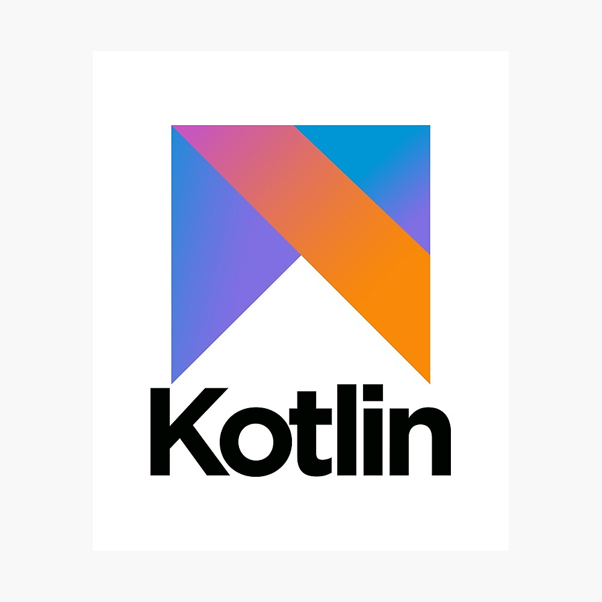

Developement mobile
Le développement d'applications mobiles est l'acte ou le processus par lequel une application mobile est développée pour les appareils mobiles, tels que les assistants numériques personnels, les assistants numériques d'entreprise ou les téléphones mobiles .
les differents langages de developpement mobile
|
Java Java a plus de 25 ans et reste le langage de programmation le plus populaire parmi les développeurs, malgré tous les nouveaux venus qui ont fait leur apparition ces dernières années. Dans un monde où les nouvelles technologies remplacent rapidement les anciennes, aucune n’a pu remplacer Java. L’une des principales raisons pour lesquelles Java est le premier choix chez les développeurs d’applications est qu’il est très facile à apprendre et à utiliser, et qu’il dispose également d’une communauté très large, qui constitue une aide bienvenue pour les nouveaux développeurs. Malgré sa facilité d’apprentissage, Java est un langage de programmation très puissant pour les applications mobiles. |
|
kotlin Kotlin est un langage de programmation orienté objet et fonctionnel, avec un typage statique qui permet de compiler pour la machine virtuelle Java, JavaScript, et vers plusieurs plateformes en natif. Présenté comme une version avancée de Java, Kotlin est un langage de programmation utilisé pour développer des applications Android modernes. Kotlin a le potentiel d’intégrer d’autres langages de programmation (tels que JAVA) pour créer des applications performantes et robustes. |
 |
|
swift Successeur d’Objective-C, Swift est un langage de programmation open-source spécialement conçu pour fonctionner avec les plateformes iOS, OS X et tvOS. Lancé par Apple en 2014, le langage est flexible, évolutif et peut facilement adapter un modèle de programmation pour ajouter des fonctionnalités modernes à n’importe quelle application. Ce langage est rapidement devenu le choix privilégié des développeurs pour la création d’application iOS. Pour toute application construite pour Apple, Swift est fortement encouragé. |
 |